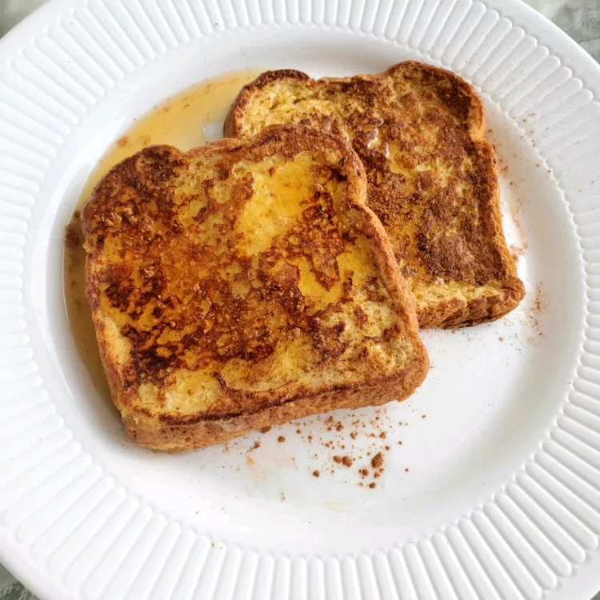

French Toast for One

Tasty, quick breakfast--perfect when you're cooking for one.
Ingredients
- ¼ cup milk
- 1 egg
- ⅛ teaspoon salt
- ⅛ teaspoon vanilla extract
- 2 thick slices bread
- 1 tablespoon olive oil
- 2 tablespoons maple syrup
- 1 pinch ground cinnamon
Steps
-
Combine milk, egg, salt, and vanilla extract in a shallow bowl. Dip both
sides of each piece of bread in egg mixture.
-
Heat a large frying pan over medium-low heat. Add oil to the hot pan and
cook both pieces of toast until lightly browned, 2 to 3 minutes per
side. Top with maple syrup and sprinkle with cinnamon.